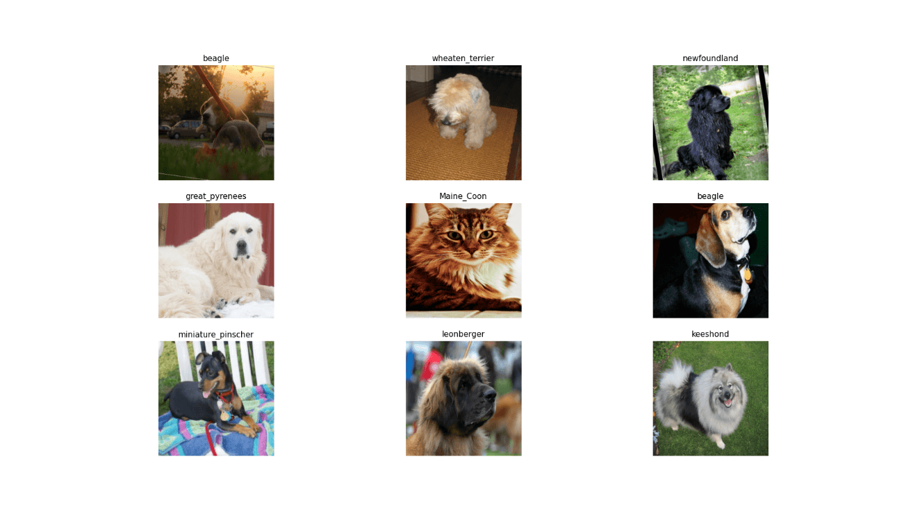

The fastai library simplifies training fast and accurate neural nets using modern best practices. See the fastai website to get started. The library is based on research into deep learning best practices undertaken at fast.ai, and includes “out of the box” support for vision, text, tabular, and collab (collaborative filtering) models.
Image dataset can be downloaded and extracted directly via the following function:
Later, we need to specify image folders and build a data loader object:
path = 'oxford-iiit-pet'
path_anno = 'oxford-iiit-pet/annotations'
path_img = 'oxford-iiit-pet/images'
fnames = get_image_files(path_img)Data loader is one of the most important parts of the image classification part. Because here we apply different image transformations which can drastically improve the accuracy of the model.
dls = ImageDataLoaders_from_name_re(
path, fnames, pat='(.+)_\\d+.jpg$',
item_tfms = RandomResizedCrop(460, min_scale=0.75), bs = 10,
batch_tfms = list(aug_transforms(size = 299, max_warp = 0),
Normalize_from_stats( imagenet_stats() )
),
device = 'cuda'
)See batch:
dls %>% show_batch()
Let’s load a pretrained ResNet50 model and construct a cnn_learner:
learn = cnn_learner(dls, resnet50(), metrics = error_rate)Downloading: "https://download.pytorch.org/models/resnet50-19c8e357.pth" to /home/turgut/.cache/torch/hub/checkpoints/resnet50-19c8e357.pth
100%|██████████| 97.8M/97.8M [00:43<00:00, 2.36MB/s]It is time to fit the ResNet model:
learn %>% fit_one_cycle(n_epoch = 8)epoch train_loss valid_loss error_rate time
0 0.741927 0.342162 0.103518 01:15
1 0.713688 0.286085 0.100812 01:15
2 0.594913 0.282628 0.088633 01:15
3 0.441623 0.263180 0.085250 01:18
4 0.354634 0.230228 0.077808 01:17
5 0.200607 0.224293 0.071719 01:15
6 0.154269 0.213939 0.062246 01:16
7 0.127354 0.211825 0.064953 01:16 Unfreeze the blocks and train again:
learn$unfreeze()
learn %>% fit_one_cycle(3, lr_max = slice(1e-6,1e-4))epoch train_loss valid_loss error_rate time
0 0.162769 0.204167 0.061570 01:42
1 0.168877 0.211312 0.071042 01:42
2 0.178176 0.202088 0.062923 01:43 Extraction of most confused:
interp = ClassificationInterpretation_from_learner(learn)
interp %>% most_confused() V1 V2 V3
1 american_pit_bull_terrier staffordshire_bull_terrier 10
2 Ragdoll Birman 6
3 staffordshire_bull_terrier american_pit_bull_terrier 6
4 Bengal Abyssinian 4
5 Bengal Egyptian_Mau 4
6 Birman Ragdoll 4
7 Egyptian_Mau Bengal 3
8 boxer american_bulldog 3
9 miniature_pinscher american_pit_bull_terrier 3
10 staffordshire_bull_terrier american_bulldog 3
11 British_Shorthair Russian_Blue 2
12 Maine_Coon Ragdoll 2
13 american_bulldog staffordshire_bull_terrier 2
14 chihuahua miniature_pinscher 2
15 Abyssinian Russian_Blue 1
16 Bengal Maine_Coon 1
17 Birman Siamese 1
18 Maine_Coon Bombay 1
19 Persian Birman 1
20 Russian_Blue Abyssinian 1
21 Russian_Blue Bombay 1
22 Russian_Blue British_Shorthair 1
23 Siamese Birman 1
24 american_bulldog american_pit_bull_terrier 1
25 american_bulldog boxer 1
26 american_pit_bull_terrier american_bulldog 1
27 american_pit_bull_terrier miniature_pinscher 1
28 basset_hound beagle 1
29 basset_hound german_shorthaired 1
30 basset_hound shiba_inu 1
31 beagle basset_hound 1
32 boxer miniature_pinscher 1
33 chihuahua pug 1
34 chihuahua samoyed 1
35 english_cocker_spaniel english_setter 1
36 english_cocker_spaniel havanese 1
37 english_setter beagle 1
38 german_shorthaired american_bulldog 1
39 great_pyrenees beagle 1
40 great_pyrenees samoyed 1
41 havanese scottish_terrier 1
42 japanese_chin Ragdoll 1
43 keeshond leonberger 1
44 leonberger great_pyrenees 1
45 saint_bernard american_bulldog 1
46 saint_bernard chihuahua 1
47 saint_bernard great_pyrenees 1
48 saint_bernard staffordshire_bull_terrier 1
49 samoyed great_pyrenees 1
50 staffordshire_bull_terrier basset_hound 1
51 staffordshire_bull_terrier beagle 1
52 wheaten_terrier havanese 1
53 yorkshire_terrier scottish_terrier 1And get predictions on new data. For this purpose, specify the name of the files:
fls = list.files(paste(path,'images',sep = '/'),full.names = TRUE, recursive = TRUE)[c(250,500,700)]
fls
#[1] "oxford-iiit-pet/images/american_bulldog_142.jpg" "oxford-iiit-pet/images/american_pit_bull_terrier_188.jpg"
#[3] "oxford-iiit-pet/images/basset_hound_188.jpg"
result = learn %>% predict(fls)